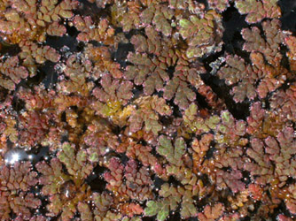

This Week's Mystery Plant | Dr. John B. Nelson Curator, USC Herbarium |
|
Let's take a look at another aquatic plant. This one is actually a tiny fern specialized for living in water. Its branches bear scale-like leaves. As with other ferns, no flowers or seeds are produced; the plants reproduce by spores formed on the lower surface of the leaves. Our plant is a native species, occurring mostly in the coastal plain counties, and it may be found widely in eastern North America. There are several other species around the world, and these species are usually not easy to tell apart. This plant is most often green, but sometimes the leaves become red, especially in very sunny settings, or perhaps when the water gets hotter than normal. It is often mistaken for one of the duckweeds, and although it often grows with them, the two plants are not at all related. Generally, our mystery plant grows on the surface of quiet ponds or ditches, as it doesn't take to living in rapidly flowing water. The plants are easily carried around by untidy ducks or other waterfowl, which easily explains its sudden appearance in a pond in which it was absent the previous year. The pond in which it grows may, during parts of the year, develop a layer of it on the surface, often showing up as a green or reddish mat. Some of you may have heard that this plant will cause more mosquitoes to breed, which is not true. Actually, it is conceivable that a dense, floating mat of this plant (along with duckweeds and other tiny plants) may make it difficult for mosquitoes to lay their eggs, and for any larvae to hatch and emerge. The leaves of this plant, and those of its related species, are able to concentrate nitrogen in the leaves. In fact, one species in Asia has been used for years as a sort of green, organic fertilizer, after harvesting and drying. Unfortunately, there are reports that this Asiatic species has found its way to North America (though not by a duck), and it may in fact become an aquatic pest. |
 Photo by Linda Lee |